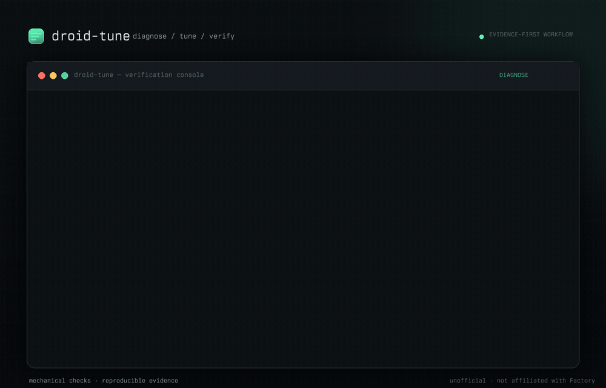

Open-source measurement harness for Factory Droid agents
Grade the commit,
not the narration.
droid-tune runs coding tasks through an agent in an isolated git worktree, grades the resulting commit with deterministic behavioral tests, and writes an evidence pack for every attempt — so a result can be audited later instead of trusted.

The finding that motivates the project
Four models fixed the bug.
Seven of eight attempts submitted nothing.
The task t004-git-surgery asks the agent to repair a broken git
history and says, explicitly: commit your result. Across a 40-trial
live flake check, four different models repaired the history correctly and
then never ran git commit.
7 of 8 attempts were classified NO_SUBMISSION.
A grader that inspects files or diffs would have passed all seven —
the work was done, sitting uncommitted in the worktree. droid-tune grades
the commit, so it fails them. The one
nemotron-3.5-lightning-free attempt that did commit also passed.
This is the gap the tool exists to measure: the difference between an agent that did the work and an agent that delivered it. A transcript tells the first story. Only the commit tells the second.
What every trial produces
An evidence pack, not a score.
Every claim-eligible trial writes a complete, hash-manifested pack. If the pack is missing the transcript, the verifier provenance, or the pricing snapshot, the tool will not make the claim. The bar is mechanical: the tool must be incapable of stating a claim the evidence doesn't support.
-
manifest.jsonSHA-256 manifest of every artifact in the pack. -
results.jsonThe outcome class — VERIFIED_PASS, NO_SUBMISSION, and the rest — from deterministic behavioral tests. LLM judges are barred from pass/fail. -
transcript.jsonlThe full session, kept for offline audit. -
patch+ frozentests/The graded diff and the exact test tree that graded it. The agent worktree never containstests/orsolution/. - Provenance Which model, which tune and its hash, which runner SHA — so a number can be traced back to the exact configuration that produced it.
The preregistered claim — published in full
The flagship result is a null result.
dt-v1-ledger-lite-nosub was registered before running:
a frozen decision rule, a pinned tune hash, a required effect size. The
hypothesis — a ~390-token tune file would cut the NO_SUBMISSION rate by
at least 25 percentage points.
80 trials later (2 arms × 4 routes × 10 attempts), the decision rule was computed without re-cutting the metric.
Result: NOT SUPPORTED. The tune moved NO_SUBMISSION 5.0 percentage points against a required 25. The hypothesis failed, and the failure is published in full — claim file, sweep data, and analysis script — because a tool that only publishes its wins is not a measurement tool.
| Metric | Control | Tuned |
|---|---|---|
| NO_SUBMISSION | 85.0% | 80.0% |
| VERIFIED_PASS | 15.0% | 20.0% |
Δ = 5.0pp vs 25pp required · two-sided Fisher exact p = 0.7695 · NOT SUPPORTED
Committed, reproducible, or both
The numbers, all of them.
Every statistic on this page is one of these. There are no others.
- 29 / 40
- VERIFIED_PASS across 5 tasks and 4 OpenCode Zen free routes, at $0 cost — a live flake check.
- 13 / 23
- VERIFIED_PASS (57%) in the committed demo pack, 3 tasks × 4 routes — regenerable by anyone from the repo.
- 4 / 10
- advertised free routes that answered a probe as usable. The rest returned errors, recorded as data.
- 80
- trials in the preregistered dt-v1 sweep: 2 arms × 4 routes × 10 attempts. Null result, published.
- 413
- tests in the suite, including re-derivation checks that fail CI if a committed report drifts from its evidence.
- 0
- runtime dependencies. Node ≥ 20, ESM. Nothing to install but the repo itself.
Reproduce it yourself
Quick start.
Clone and run the suite
git clone https://github.com/sainzs/droid-tune
cd droid-tune
npm testInstall as a Droid plugin
droid plugin marketplace add \
https://github.com/sainzs/droid-tuneRunning trials against models requires your own credentials; free routes are probed daily and the results are committed as data. The demo pack and every published number regenerate offline, with no credentials and no network.